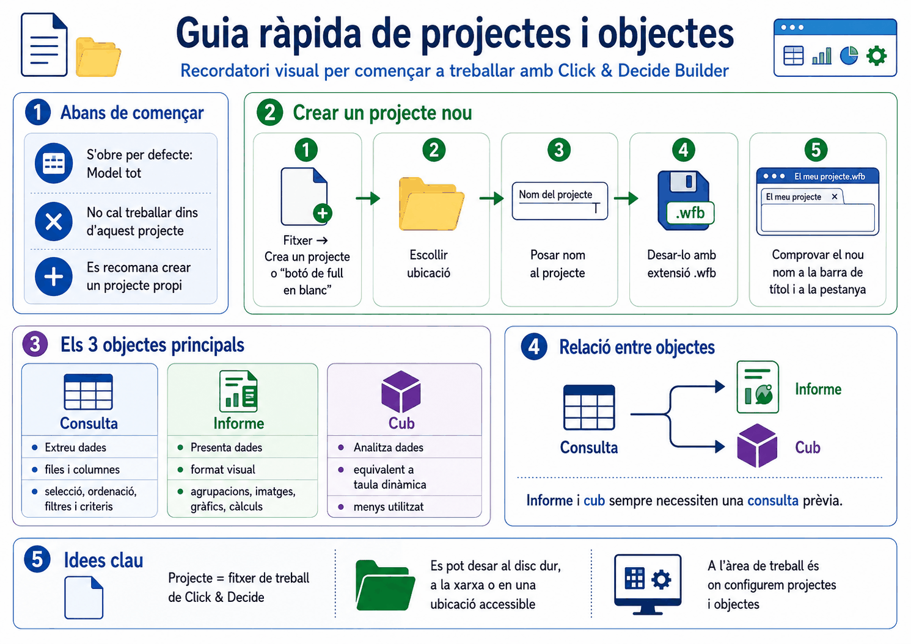
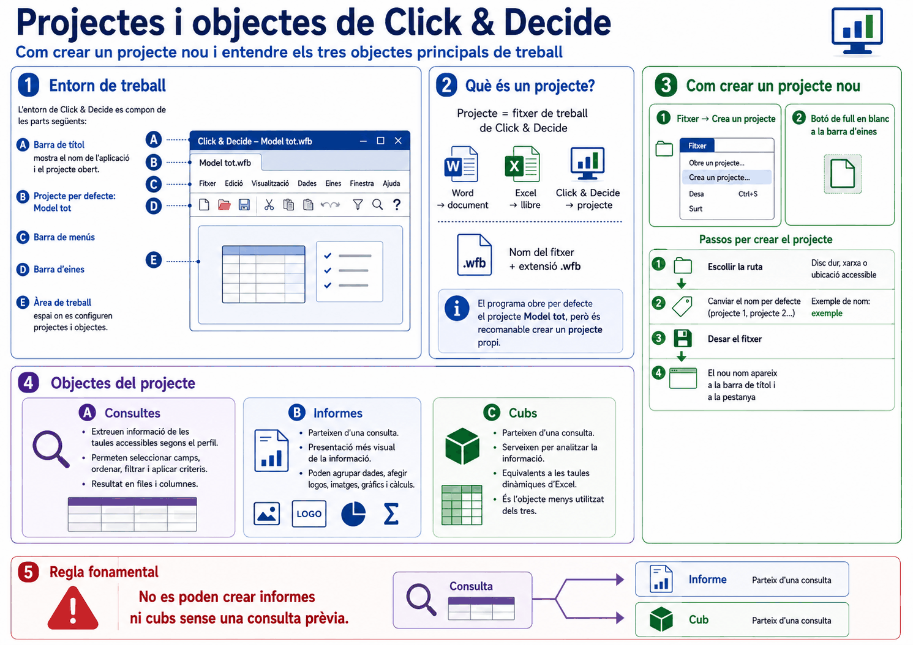
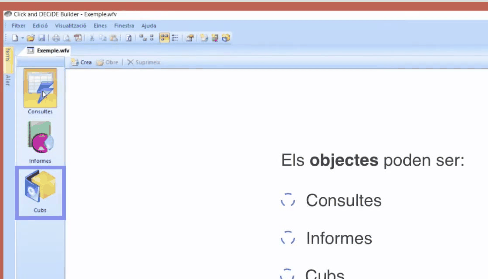

Apartat 1La interfície de Builder
En obrir el programa apareix l'àrea de treball. L'estètica recorda deliberadament la d'Access, i les parts són les que espereu de qualsevol aplicació d'escriptori:
Barra de títol
A dalt de tot. Mostra el nom de l'aplicació i el nom del projecte actiu. És on comprovareu de seguida si esteu treballant al projecte que voleu.
Barra de menús
Fitxer, Consulta, Visualització... Conté totes les opcions de treball, moltes de les quals tenen una icona equivalent.
Barra d'eines
Els accessos ràpids. Al llarg del curs en farem servir sis o set constantment: crear, desar, executar, criteris, propietats i exportar.
Àrea de treball
L'espai central on es configuren els projectes i els objectes, organitzat en pestanyes.
Apartat 2Què és exactament un projecte
Ja el vam definir a la unitat 1; ara podem ser més precisos. Projecte és el
nom que reben els fitxers que genera el programa, de la mateixa manera que al
Word se'n diuen documents i a l'Excel, llibres. L'extensió és
.wfv, i el fitxer és equiparable -per estructura i disseny- a
una base de dades d'Access.
Les consultes, els informes i els cubs són com documents sense extensió pròpia que viuen dins d'aquest fitxer. No els trobareu com a fitxers separats al disc: existeixen només dins del projecte que els conté.
Tres maneres de crear-ne un
- des del menú, tal com mostra la ruta anterior;
- amb la icona de full en blanc de la barra d'eines;
- o, si el projecte ja existeix, obrint-lo directament amb doble clic al fitxer.
En obrir el programa sempre es carrega el projecte "Model tot". Això no vol dir que hi hàgiu de crear els vostres objectes: la bona pràctica és crear-ne un de propi amb el nom que vulgueu i desar-lo a la ruta que us convingui.
Pareu atenció a una coincidència que despista molt: a la unitat 4 veureu que l'origen de dades també s'anomena "Model tot". Són dues coses diferents amb el mateix nom. El projecte és el vostre fitxer; l'origen de dades és l'arrel de l'arbre de taules del servidor.
Si no li'n poseu cap, els projectes es diuen projecte 1, projecte 2 i així successivament. Val més posar-hi un nom que digui alguna cosa: el projecte es guarda i es reobre durant mesos, i "projecte 3" no us dirà res d'aquí a mig any.
Apartat 3Esquema general

Apartat 4Els tres objectes
Consultes
Són la base de tot. Permeten extreure informació de les taules a les quals teniu accés segons el vostre perfil: seleccionar camps, ordenar-los i aplicar filtres o criteris.
El resultat d'una consulta es mostra sempre en format de taula, amb files i columnes. No hi ha gràfics, ni agrupacions visuals, ni logotips. És una graella. Les unitats 4 a 14 d'aquesta guia tracten, totes, de consultes.
Informes
Presenten la informació obtinguda en una consulta d'una manera molt més visual i estructurada. Ja no és una graella: la informació es pot agrupar per camps, hi podeu incloure càlculs i subtotals, gràfics, logotips o imatges, i controlar el format de pàgina.
Un informe es divideix bàsicament en tres cossos: capçalera i peu de l'informe, capçalera i peu de pàgina -tots dos opcionals- i el cos de línies de detall, que és la part essencial.
Cubs
Permeten analitzar la informació d'una consulta amb més profunditat. El seu funcionament és equivalent al de les taules dinàmiques d'Excel. Dels tres objectes són, amb diferència, els que menys s'utilitzen en aquesta eina.


Apartat 5La regla de dependència
No es poden crear informes ni cubs si abans no s'ha creat i desat una consulta. La consulta és la font de dades indispensable dels altres dos objectes.
La relació, però, no és de propietat: la consulta té entitat pròpia i és independent de l'informe o del cub, encara que aquests se n'alimentin. Això té una conseqüència útil:
- d'una mateixa consulta podeu crear-ne més d'un informe i més d'un cub, cadascun amb una presentació diferent;
- si modifiqueu la consulta -hi afegiu un camp, en canvieu un criteri-, els informes que se'n deriven treballaran amb la nova definició.
La consulta de la qual parteix un informe ha de tenir seleccionats tots els camps que després voldreu visualitzar a l'informe. Un camp que no és a la consulta no existeix per a l'informe.
Apartat 6Gestionar objectes i projectes
Obrir una consulta existent
Dins de l'índex de consultes del projecte, seleccioneu-la i feu-hi doble clic, o premeu Obre.
Documentar què fa cada consulta
A l'índex de consultes -i igualment al d'informes- podeu afegir comentaris que orientin sobre la seva funció:
És un camp de text lliure i no serveix per a res tècnicament. Serveix perquè d'aquí a nou mesos sapigueu si Persones 3 era la bona.
Traspassar una consulta a un altre projecte
Si heu creat una consulta al projecte equivocat, o la voleu reaprofitar, no cal refer-la:
Funciona igual per als informes. És també la manera de compartir feina amb un company: li passeu el projecte i ell hi copia el que li interessa.
Els objectes no es creen només des dels botons de la barra lateral.
Amb un projecte obert, el menú Fitxer > Crea
porta un submenú amb tot el que es pot crear:
Projecte (Ctrl+U), Consulta,
Informe, Cub i Consulta nativa SQL/MDX. L'últim
és per a qui ja sap SQL i vol escriure la sentència directament, i no
és el camí d'aquesta guia: aquí es construeix la consulta amb els
controls i es mira l'SQL que en surt.
Apartat 7Llista de comprovació
- Identificar les quatre parts de la interfície de Builder.
- Explicar què és un projecte i quina relació té amb els objectes que conté.
- Crear un projecte pels tres camins possibles.
- Descriure què aporta una consulta, un informe i un cub.
- Enunciar la regla de dependència entre els tres objectes.
- Afegir una descripció a una consulta des de les propietats.
- Copiar una consulta d'un projecte a un altre.
Comença la part central del curs: construir la primera consulta de debò. Triar l'origen de dades, seleccionar una taula, entendre com s'anomenen els camps i executar-la.